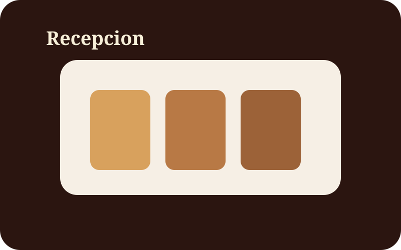
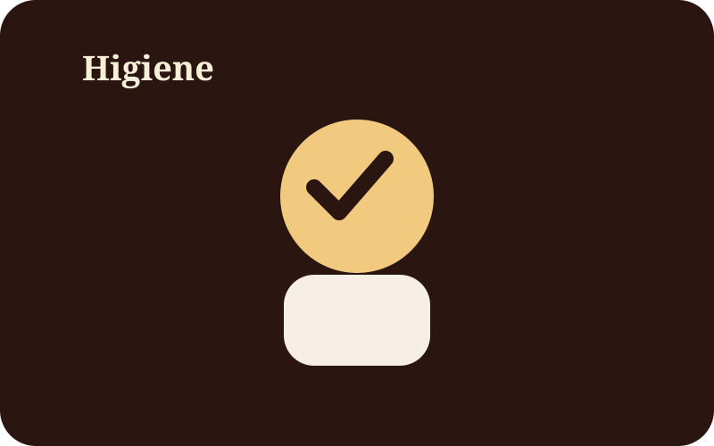
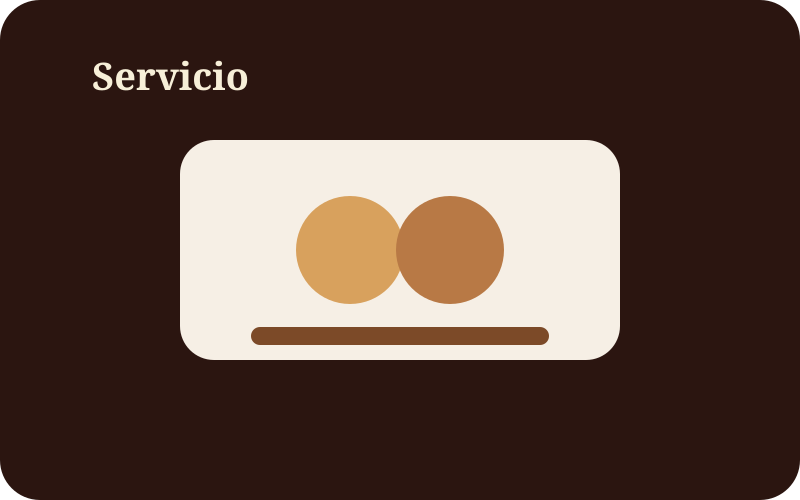

Norma base
NOM251SSA12009
Referencia para buenas prácticas de higiene en la preparación y manejo de alimentos y bebidas.
Inocuidad y control
Esta sección explica cómo se prepara el Café y qué controles se aplican para limpieza, temperatura, manipulación y trazabilidad.
Norma base
Referencia para buenas prácticas de higiene en la preparación y manejo de alimentos y bebidas.
Proceso de salubridad



Se inspeccionan empaques, integridad, limpieza y ausencia de plagas. El grano de especialidad se conserva en recipientes herméticos, lejos de humedad y contaminantes, con rotación PEPS.
El barista usa bata o delantal limpio, red para cabello, manos lavadas y desinfectadas, y mantiene distancia adecuada del producto durante la atención. Barras y superficies se desinfectan con soluciones aprobadas.
Se emplean molinos de muelas cerámicas limpios diariamente, agua purificada y máquinas de espresso con backflush al final de la jornada para evitar sarro, sedimentos y aceites oxidados.
Se utilizan tazas o envases de grado alimenticio y los residuos de Café se separan de inmediato en botes con tapa y pedal para mantener el área limpia y libre de insectos.
Medidas
Antes de iniciar turno, entre tareas y después de manipular dinero o residuos.
Superficies, utensilios, jarras, portafiltros y máquinas al cierre de cada jornada.
Registro de conservación de leche, jarabes y productos perecederos.
Primero en entrar, primero en salir para minimizar caducidad y mermas.
Uso de agua purificada para proteger salud y sabor en cada extracción.
Limpieza constante para evitar aceites rancios y mantener el perfil organoléptico.
Vasos y tazas de grado alimenticio, con entrega limpia y sin contaminación cruzada.
El barista proyecta seguridad, orden y control para convertir la higiene en confianza visible.
Buenas prácticas
Un negocio de alimentos se vuelve más confiable cuando el cliente ve orden, limpieza y consistencia desde la barra.